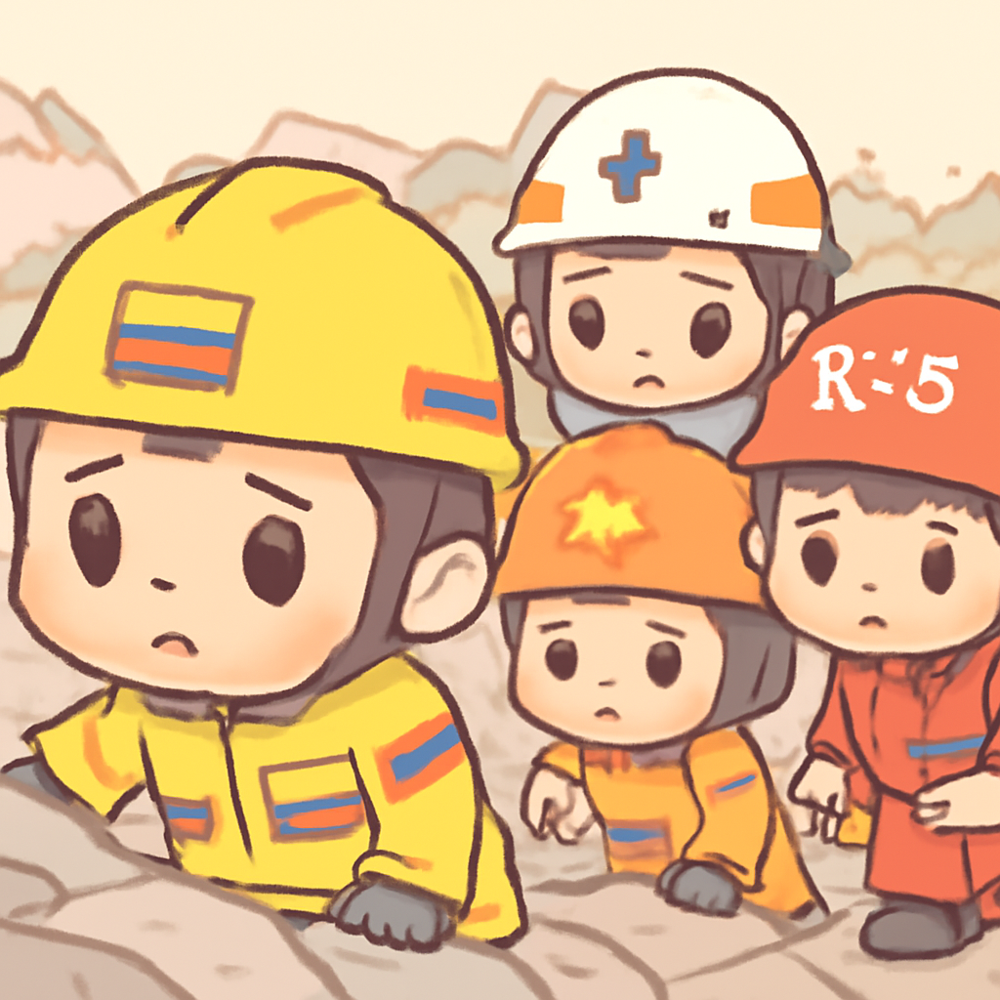
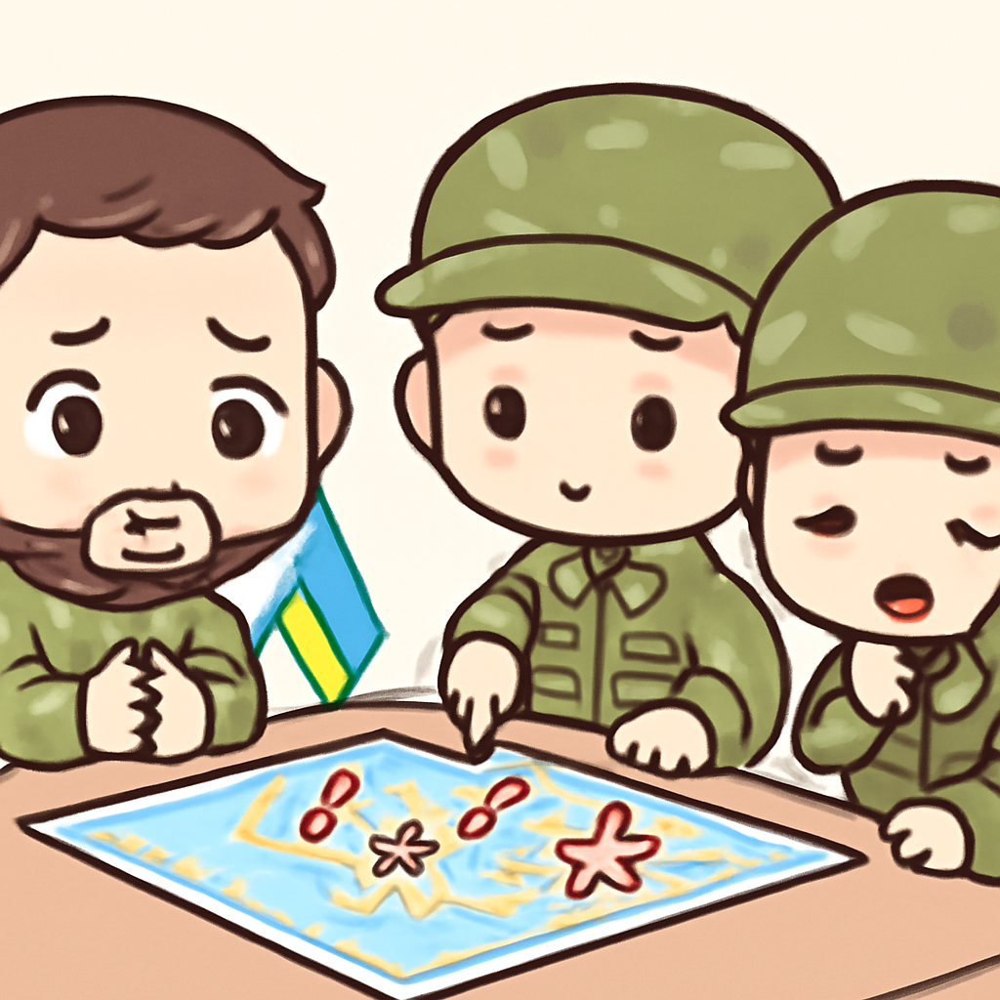
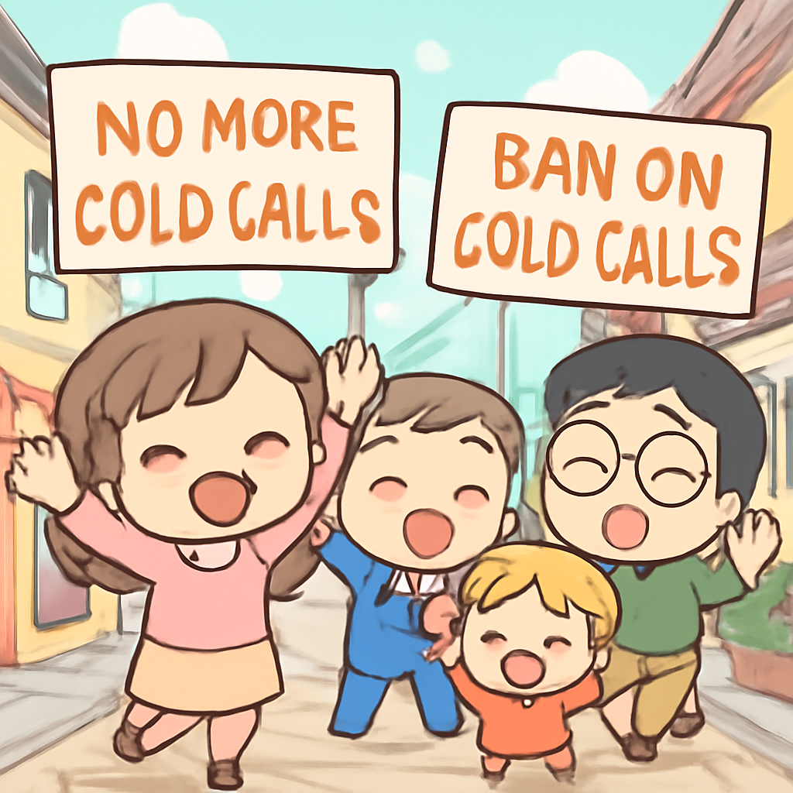

其一 · 哥倫比亞 · 地震死亡人數攀升至181人
哥倫比亞地震造成181人喪生，救援工作持續進行中

在哥倫比亞，發生了7.4級地震，死亡人數已上升至181人。救援人員在加利和麥德林等地正全力搜尋被困的人。這次地震是十年來最強的一次，造成的破壞範圍廣泛，讓人不禁感慨，自然災害真的不會給你提前通知。
🔗 原始新聞 ↗
2026-08-12 · 以古觀今，以笑抗愁
哥倫比亞地震造成181人喪生，救援工作持續進行中

在哥倫比亞，發生了7.4級地震，死亡人數已上升至181人。救援人員在加利和麥德林等地正全力搜尋被困的人。這次地震是十年來最強的一次，造成的破壞範圍廣泛，讓人不禁感慨，自然災害真的不會給你提前通知。
🔗 原始新聞 ↗
烏克蘭總統指控俄羅斯使用北韓導彈攻擊

在烏克蘭，總統澤連斯基表示，俄軍在扎波羅熱地區發射的導彈來自北韓，造成七人死亡。此舉讓人擔心國際局勢的緊張，尤其是北韓與俄羅斯之間的合作似乎越來越密切，這可不是一個好兆頭。
🔗 原始新聞 ↗
法國正式禁止冷電話行銷，消費者歡呼

法國通過新法，禁止未經請求的電話行銷，這讓不少民眾終於可以安靜地吃飯，而不必接到那些讓人想要掛掉電話的推銷聲音了。這項法令被消費者團體稱為「小革命」，看來法國人不僅是對美食有要求，對電話也不遺餘力！
🔗 原始新聞 ↗
黎巴嫩成為中東首個廢除死刑的國家
黎巴嫩國會通過新法，計劃廢除死刑，這將使黎巴嫩成為中東地區首個廢除死刑的國家。這一改變不僅反映出黎巴嫩對人權的重視，也可能影響周邊國家的刑罰政策，真是一個值得關注的進步。這樣的改革，讓人感覺黎巴嫩真的是在追求「生命的價值」呢！
🔗 原始新聞 ↗
俄羅斯釋放健康不佳的前美國海軍陸戰隊員
經過四年的監禁，俄羅斯釋放了前美國海軍陸戰隊員羅伯特·吉爾曼。他的家人表示，他在獄中健康狀況不佳，這次釋放被視為人道主義行動。這一事件讓人不禁思考，國際關係中是否還有一絲人性的光芒？希望他能早日恢復健康，重返平靜生活。
🔗 原始新聞 ↗